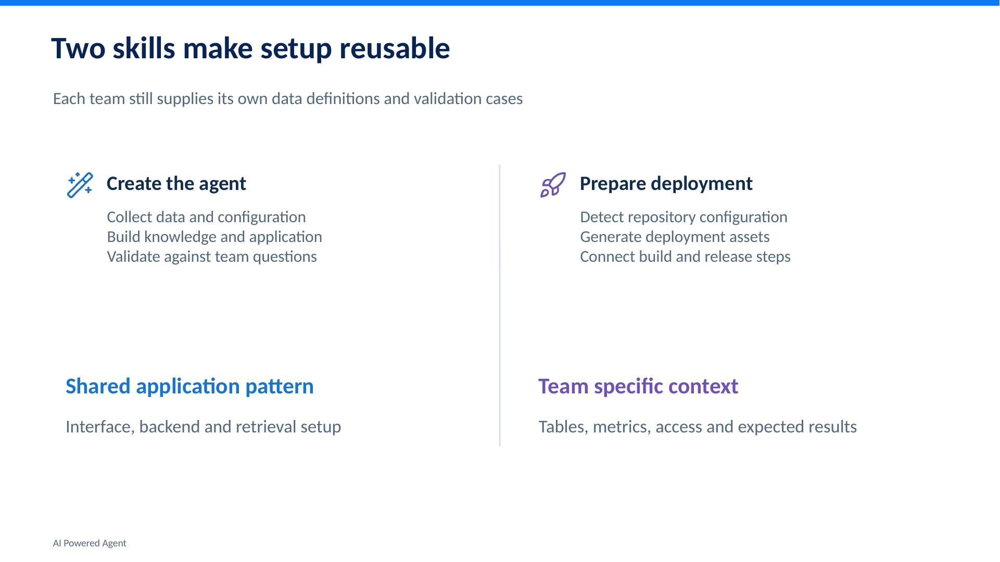
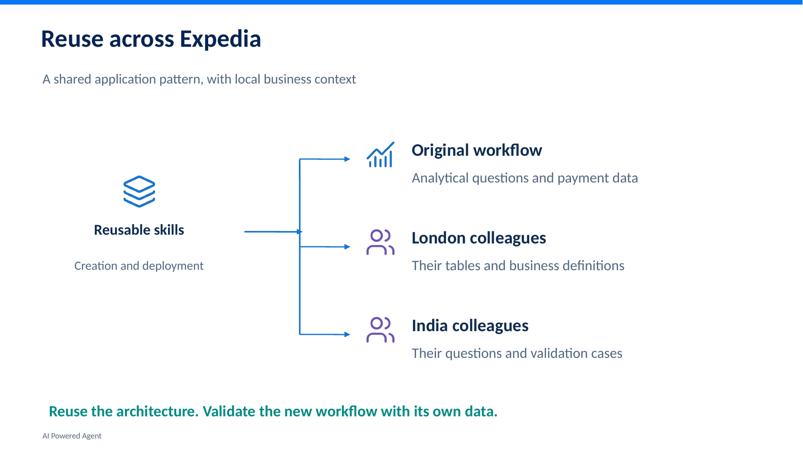
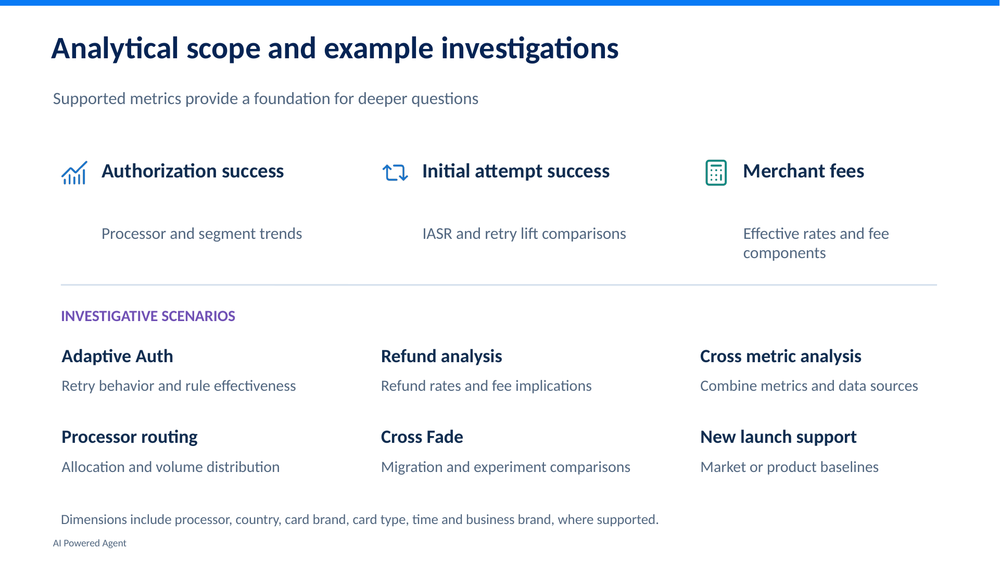
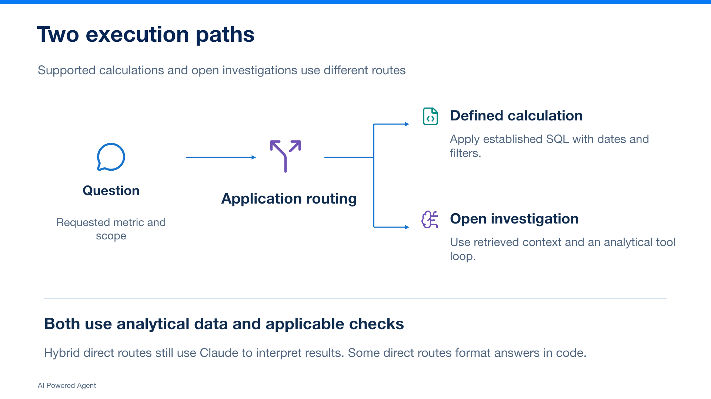
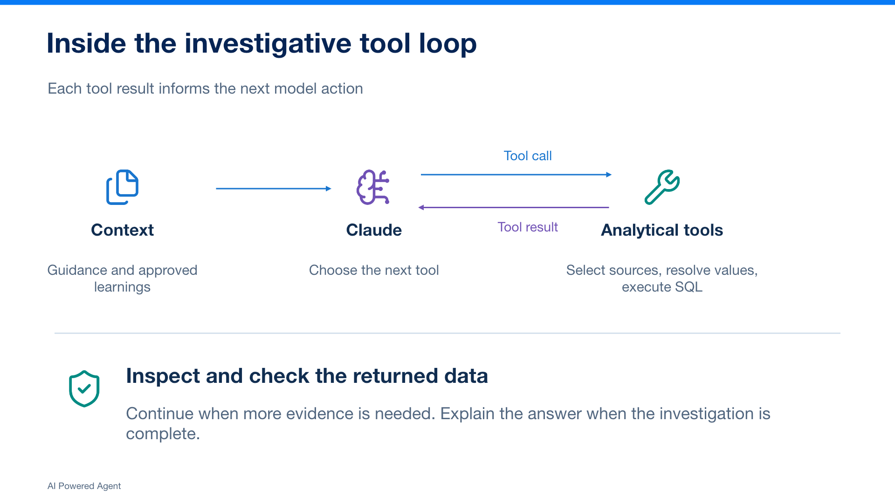
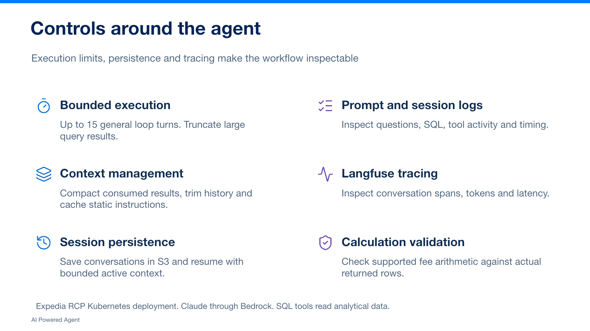
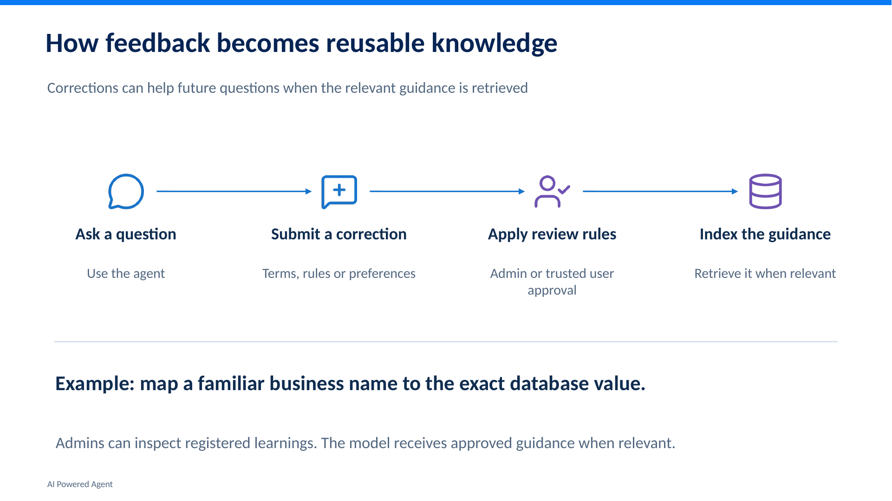
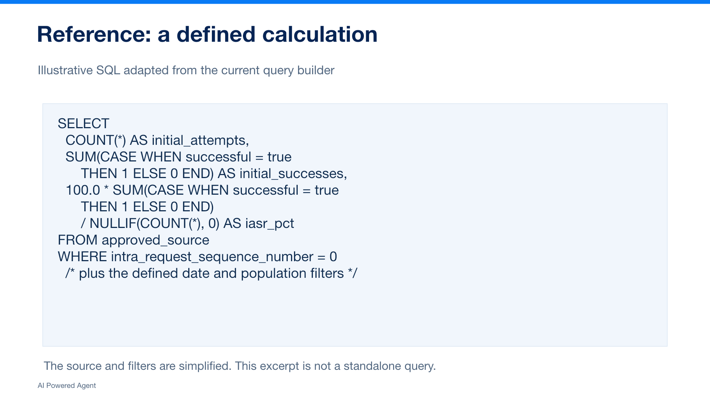

From workflow to working agent
I cover the recurring payment analytics workflow, demonstrate the agent, and explain the design decisions and fixes that shaped it.
I built this agent to help colleagues investigate payment questions in natural language. You can watch my full walkthrough or explore the slides and recordings below.
I recommend starting with the main walkthrough. The shorter video shows how I made the architecture reusable. You can also watch individual slides below.
I cover the recurring payment analytics workflow, demonstrate the agent, and explain the design decisions and fixes that shaped it.
I show how the setup can be adapted for other teams while each team supplies its own data and business context.
I included eight additional slides for a closer look at the setup, execution paths, controls, and analytical scope. Open any topic to view the slide.








I included two sample exports from the agent. I masked dollar amounts in these copies for external review.